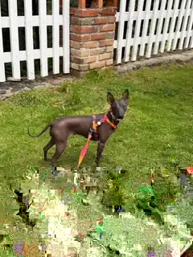
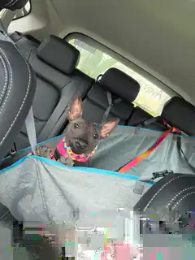

En el mundo del Derecho, las pruebas lo son todo. Pero para la Licenciada Patricia, orgullosa abogada de la UNAM, la prueba definitiva llegó en forma de una pequeña Xoloitzcuintle miniatura: Sami Ramírez.
Sami Ramírez
Miniatura (Sin Pelo)
Lic. Patricia (UNAM)
Una Señal del Destino
Durante la entrega oficial en la Ciudad de México, Patricia nos compartió que su conexión con Sami nació de una "señal". Como profesional formada en la máxima casa de estudios, valora profundamente la historia y el patrimonio, elementos que este ejemplar representa fielmente.
"Sami no solo es una mascota; es una guardiana milenaria que ahora forma parte de mi vida y mi carrera."
Patrimonio Digital e Inmutable
Al igual que todos nuestros ejemplares, la identidad y el linaje de Sami Ramírez están siendo integrados en la Tonalli Wallet. Esto garantiza que su procedencia sea transparente y eterna, uniendo la tradición azteca con la tecnología del futuro.

Actualización: Patricia nos ha compartido con mucha emoción una fotografía de la primera noche de Sami Ramírez en su nuevo hogar. Tras un día lleno de emociones y señales, la pequeña Xoloitzcuintle se muestra totalmente adaptada, disfrutando de la calidez y el amor que solo un hogar tan especial como el de una orgullosa universitaria de la UNAM puede brindar. Momentos como este reafirman nuestra misión en Xolos Ramírez.

Actualización — Primer viaje por carretera
31 de agosto de 2026: Patricia volvió a compartirnos noticias de Sami Ramírez durante su primer viaje por carretera. Nos cuenta que se portó súper bien durante el trayecto y que, entre descanso y curiosidad, al final el chisme pudo más que la flojera. Estas imágenes muestran a Sami disfrutando de una nueva aventura junto a su familia y completamente integrada a su vida cotidiana.


Que sigan las aventuras, Patricia y Sami. 🐾🚗✨
¡Bienvenida a la familia, Licenciada! Estamos seguros de que Sami traerá equilibrio y alegría a su hogar. 🏛️🐾